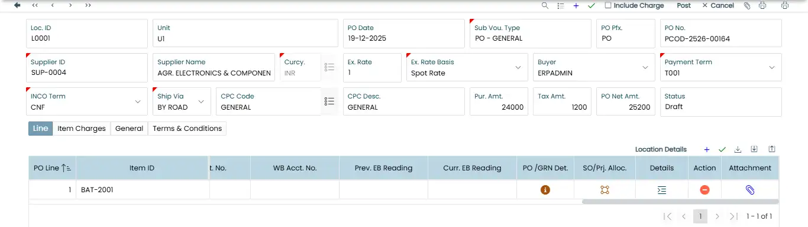

<div data-category="Operating Instructions" data-title="Delete the data" data-updated="December 01, 2025" data-contributors="RoadmapIT" data-breadcrumb="Home,Operating Instructions,Delete the data">
  <div class="page-content">
    <p>This screen explains the steps required to delete existing data in the application.</p>
    <!-- Delete Data -->
    <h2>Delete the data:</h2>
    <ul style="list-style-type: none; align-content: center">
      <li class="mouse-icon">
        The record can be deleted by Clicking on the <i class="bi bi-dash-circle-fill fs-6 mx-2 text-danger"></i> icon.
      </li>
    </ul>
    
  </div>
</div>